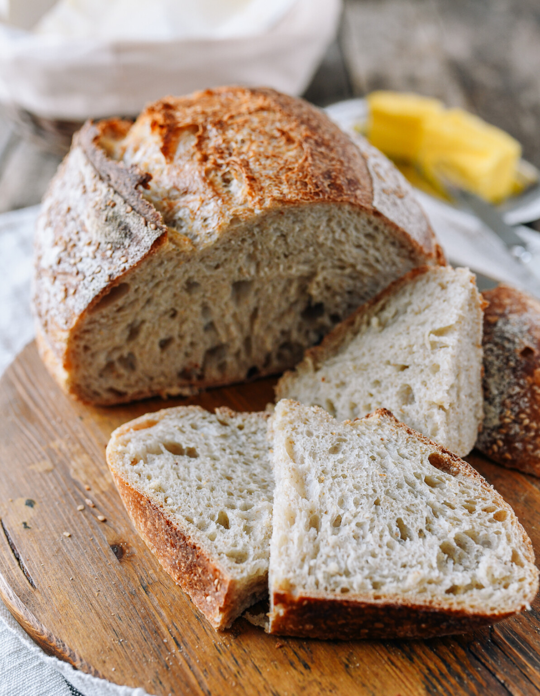

Sourdough

Description
During the pandemic, I rediscovered the joys of baking with an incredible sourdough recipe.
The process of tending to the starter, watching it come to life, and crafting it into a perfect loaf was incredibly soothing.
Each step, from the rhythmic kneading to the anticipation of the rise, provided a welcome respite from the uncertainty of those times.
The smell of freshly baked sourdough filling the house was a balm, making each day a little more comforting and connected to simpler pleasures.
This newfound hobby soon became a way to give back to the community.
I began baking extra loaves and selling them to friends, family, and neighbors, donating the proceeds to local charities.
The response was heartwarming; people loved the tangy, chewy bread, and knowing that their purchase was helping those in need made it even sweeter.
What started as a therapeutic pastime turned into a mission of kindness, bridging our isolated lives with acts of generosity and delicious, homemade bread.
Ingredients
- 1 cup (240g) active sourdough starter
- 1 1/2 cups (360ml) warm water
- 4 cups (500g) bread flour
- 2 teaspoons salt
Instructions
- In a large bowl, mix the sourdough starter and warm water until combined.
- Add the bread flour and salt, mixing until a rough dough forms.
- Cover the bowl with a damp cloth and let it rest for 30 minutes.
- Turn the dough onto a lightly floured surface and knead for about 10 minutes until smooth and elastic.
- Place the dough in a lightly oiled bowl, cover, and let it rise at room temperature for 4-6 hours, or until doubled in size.
- Shape the dough into a round loaf and place it in a floured proofing basket. Cover and let it rise for another 2-3 hours.
- Preheat your oven to 450 degrees F (230 degrees C) with a Dutch oven inside.
- Carefully transfer the dough to the hot Dutch oven, score the top with a sharp knife, and cover with the lid.
- Bake for 20 minutes, then remove the lid and bake for an additional 20-25 minutes, or until the crust is golden brown.
- Remove the bread from the oven and let it cool on a wire rack before slicing.